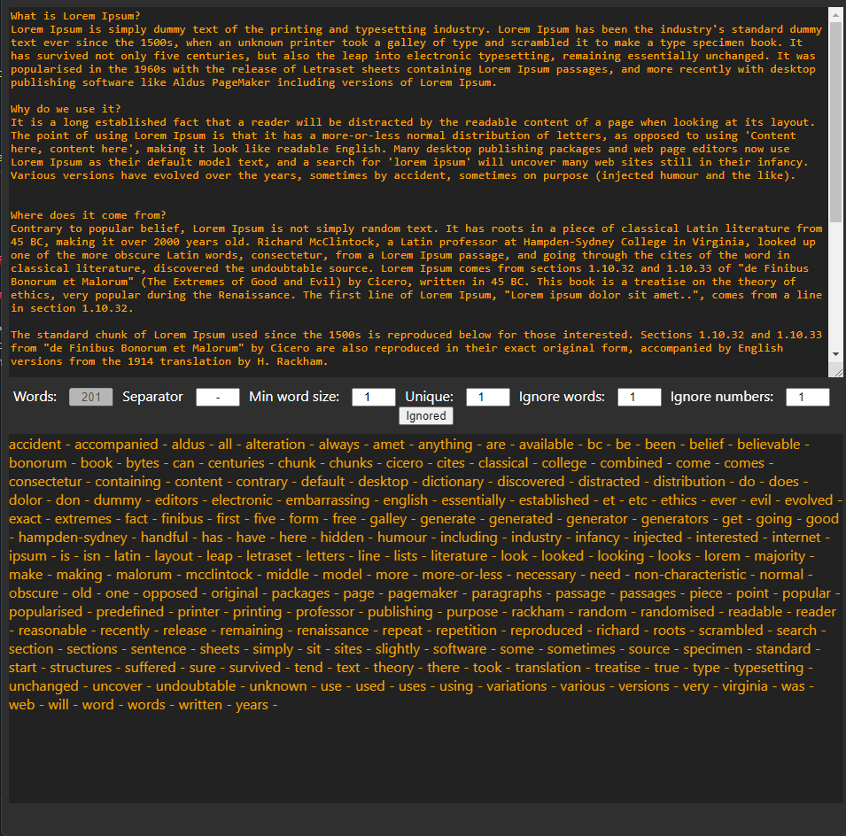
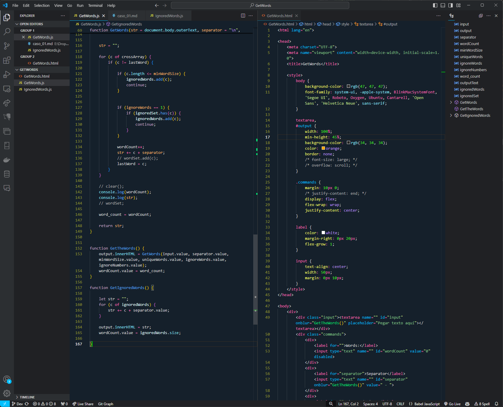

GetWords
Esta aplicación es un sofisticado analizador de texto desarrollado en JavaScript, diseñado para extraer palabras únicas de un bloque de texto, ignorando aquellas que son irrelevantes según un conjunto predefinido de palabras ignoradas. El código permite configurar la longitud mínima de las palabras, la opción de ignorar números, y si se debe considerar sólo palabras únicas. La implementación incluye el uso de Regular Expressions (REGEX) para filtrar el texto, reemplazando caracteres que no sean letras, números o símbolos específicos, lo cual es esencial para asegurar que solo se procesen palabras relevantes.

El núcleo de la aplicación se centra en la función GetWords, que toma un bloque de texto como entrada y lo procesa según los criterios especificados por el usuario. La función primero limpia el texto de caracteres no deseados y lo divide en un array de palabras. Luego, dependiendo de las configuraciones seleccionadas, filtra las palabras que no cumplen con los criterios de longitud mínima o que pertenecen a la lista de palabras ignoradas. Este procesamiento eficiente se logra mediante el uso de sets de JavaScript para eliminar duplicados y almacenar palabras ignoradas, garantizando que la salida contenga solo palabras significativas.

Finalmente, la aplicación incluye funciones adicionales como GetTheWords y GetIgnoredWords, que permiten al usuario obtener la lista procesada de palabras o las palabras ignoradas, respectivamente. Estas funciones se integran con el DOM para actualizar la interfaz de usuario en tiempo real. La implementación refleja un enfoque robusto en la manipulación de texto utilizando JavaScript y demuestra cómo aplicar técnicas de procesamiento de lenguaje natural (NLP) a aplicaciones web.